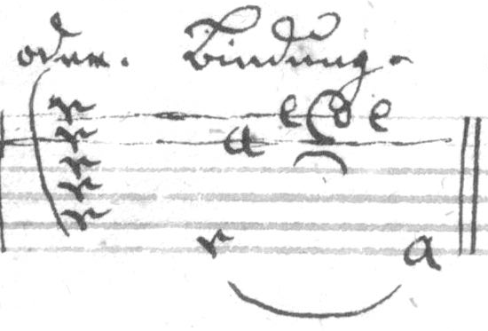

Andeutung der Finger rechter ...


Der Daumen Schlag.


Dopp. Abzug unausgeschreiben.


Beyderley Abzug.


Scheifer.


oder. [i.e. an alternative notation for Uberlegung] Bindung.



| TabCode | MEI | |
|
Andeutung der Finger rechter ... |
a5. a4: a1(Fr...:3) a2. a1: a3. a2: a4. a3: a5. || |
|
| ... und linker Hand. |
d6(Fl3:7) c4(Fl1:7) d3(Fl4:7) c2(Fl2:7) |
|
| Zugleich geschlagen. |
a2c3(E)Xa c2d3(E)Xa a2c3(E)Xa || | |
| Gebrochen. |
c2(S)d6 a2(S)c6 c3(S)Xa d3(S)d6 | |
| sincubirt. |
a2(S)c3(S)a6 a1(S)c2(S)a5 a2(S)c3(S)a6 c2(S)d3(S)d6 | |
|
Der Daumen Schlag. |
a4! a3 c5! a3 a4! a3 || | |
| Gestossen. |
c2a3(E)d6 a2a3c6 || {not in TabCode!} | |
| Ausgeschreine Abzug. |
c1(C) a1 c2(C) a2 | |
| Derselbe nicht aus geschreiben. |
a1, a2, | |
| Doppelter Abzug |
c1(C)c3(C) a1a3 c2(C)c4(C) a2a4 | |
|
Dopp. Abzug unausgeschreiben. |
a1,a3, a2,a4, {a5 cancelled} || | |
| Einfall. |
c2(C) d2 a2(C) c2 | |
| Selbige unausgeschreiben. |
d2u c2u | |
| Doppelter Einfall. |
a2(S)a4(S) c2c4 a1(C)a3(C)c3 c1b3 || | |
| oder [i.e. an alternative notation] |
c2uc4u c1ub3u | |
|
Beyderley Abzug. |
c4,(C) a4 c3,(C)a3 || | |
| Einfall auf 3 Noten. |
a5(C1:7) c5 d5(C-1:7) a4(C2:7) c4 e4(C-2:7) || | |
| Dergleichen Abzug. |
d2(C1:-7) c2 a2(C-1:7) d3(C2:-7) c3 a3(C-2:7) | |
| Bebung. |
h1# f2# h3# h4# | |
| Mordant. |
d2(Og:5) c1(Og:5) | |
| Semi-Mord: |
c1(Oi:5) d2(Oi:5) | |
|
Scheifer. |
d3 c3 d3 f3 d3 c3 e4 {Not in TabCode!} | |
| Triller. |
a2x c3x | |
| Semi-Trillo. |
c2(Od:5) | |
| Doppelter Triller. |
a2xa4x | |
| Fortgang des Trillers |
a1x(E)Xa/// a4 a3 a4 -1xXa// a4 a3 a4 -1xXa/ a4 a3 a4 | |
| Uberlegung |
c5(C1:7) c4 c3 c2 c1(C-1:7) {Semantics for 'barré' lacking in TabCode!} | |
|
oder. [i.e. an alternative notation for Uberlegung] Bindung. |
c1c2c3c4c5 {TabCode can't do this!} | c6(C1:-7) a2 e1(C2:-67) d(C-2:7)1 e1 a6(C-1:-7) | |
| Gebrochener Baß |
X4 Xa// Xa a6 {TabCode can't do this!} | |
| [?] Gestreichner Töne |
c2x a1.(C1:7) c2.(C-1:7) a1d2< | |
| Geschliefener Töne. |
Ec3:(C1:7) | Eh3(C-1:7) h6! Xa// c2.(C2:7) | Eg2(C-2:7) h6! Xa// d1.(C3:7) | Eg1(C-3:7) h6! Xa// g1(Fr3:7)(C4:7) | Em1(C-4:7) X5 || |